Patrocinio legale del dipendente pubblico: anticipo o rimborso?
Un dipendente pubblico citato in giudizio per fatti connessi al servizio può ottenere che l'amministrazione paghi l'avvocato. Ma l'anticipo immediato non è automatico: dipende dall…

Licenziamento illegittimo nelle piccole imprese: cosa cambia sulla tutela indennitaria
Il licenziamento illegittimo nelle piccole imprese segue regole diverse rispetto alle aziende maggiori. Comprendere la soglia dimensionale, la data di assunzione e il regime applic…

Canone vile e asta giudiziaria: quando l'affitto non vale contro chi compra
Chi acquista un immobile all'asta non sempre è tenuto a rispettare il contratto di affitto in corso. Se il canone è troppo basso rispetto al valore di mercato, la locazione può ess…

Cortei violenti e nuovo reato di violenza organizzata: cosa prevede il D.L. 190/2026
Il Governo ha varato il D.L. 190/2026, che introdurrebbe un reato di violenza organizzata nelle manifestazioni pubbliche, con pene severe per gli organizzatori e misure estese ai m…

IA e decisioni sul lavoro: l'ultima parola resta all'uomo
L'intelligenza artificiale entra nella selezione, nella valutazione e nella gestione del personale. Ma può un algoritmo decidere da solo un licenziamento o una sanzione? La normati…

Prescrizione contributi INPS: decorre dal dovuto, non dal pagato
La Corte d'Appello di Roma (sent. 2995/2026) fissa un principio netto: i contributi previdenziali si prescrivono in cinque anni dal momento in cui la retribuzione avrebbe dovuto es…

Doppia sanzione per evasione: quando il Fisco cede al ne bis in idem
La Corte di giustizia tributaria di secondo grado della Lombardia (sent. n. 1586/2026) ha annullato le sanzioni amministrative irrogate a un imprenditore già condannato in sede pen…

Guasto del condizionatore centralizzato: il condominio risarcisce il ristoratore?
Un ristoratore chiede al condominio il risarcimento per il mancato guadagno causato dal guasto del condizionatore centralizzato. Una recente pronuncia della Corte d'Appello di Peru…

Recensioni false: come difendersi tra AGCM, privacy, piattaforme e giudice
Le recensioni false danneggiano reputazione e fatturato di chi lavora bene. L'ordinamento offre più strumenti, con effetti diversi: alcuni puntano a far rimuovere il contenuto, alt…

Software aziendali e controllo dei dipendenti: cosa dice la legge
Gestionali, software di produttività e strumenti di monitoraggio raccolgono ogni giorno una mole enorme di dati sui lavoratori. Non tutto però è lecito: l'art. 4 dello Statuto dei …
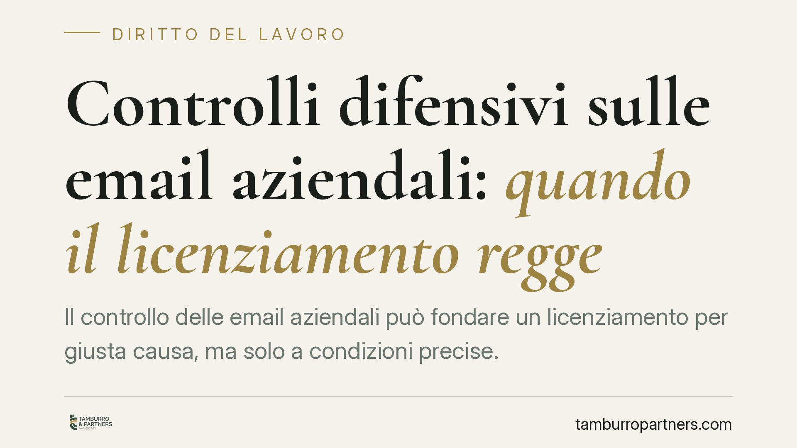
Controlli difensivi sulle email aziendali: quando il licenziamento regge
Il controllo delle email aziendali può fondare un licenziamento per giusta causa, ma solo a condizioni precise. Una recente pronuncia del Tribunale di Pisa conferma che i controlli…
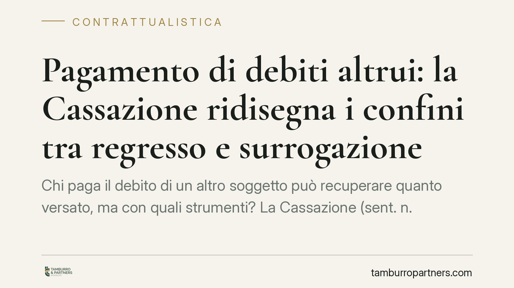
Pagamento di debiti altrui: la Cassazione ridisegna i confini tra regresso e surrogazione
Chi paga il debito di un altro soggetto può recuperare quanto versato, ma con quali strumenti? La Cassazione (sent. n. 16835/2026) separa due scenari: obbligazioni a interesse comu…
Screenshot delle chat nel processo penale: quando sono prova valida
Uno screenshot di una conversazione può bastare in un processo penale. La Cassazione ha ribadito che le immagini delle chat prodotte da chi ha partecipato al dialogo sono documenti…
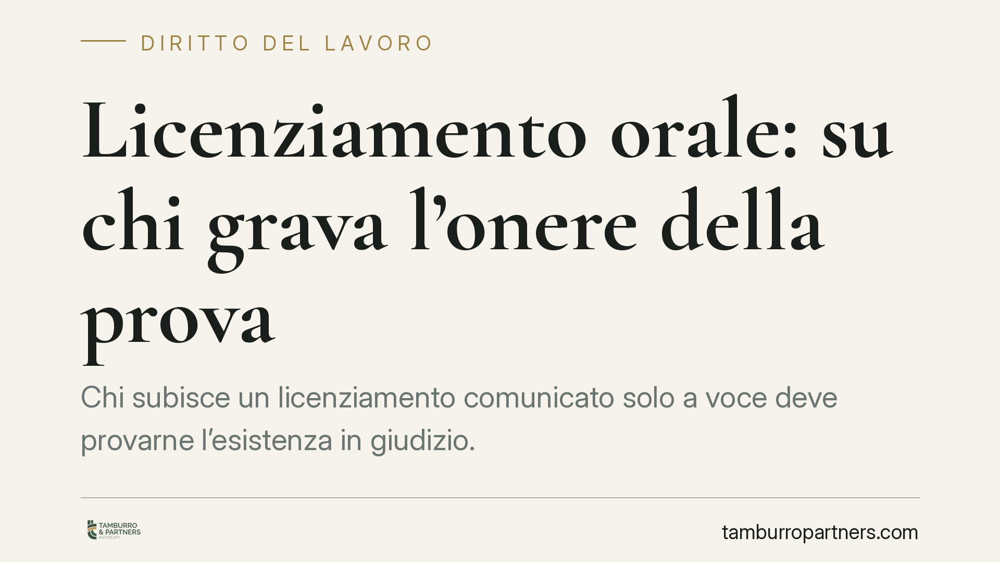
Licenziamento orale: su chi grava l'onere della prova
Chi subisce un licenziamento comunicato solo a voce deve provarne l'esistenza in giudizio. Lo ribadisce una recente pronuncia della Cassazione: non basta smettere di lavorare, serv…
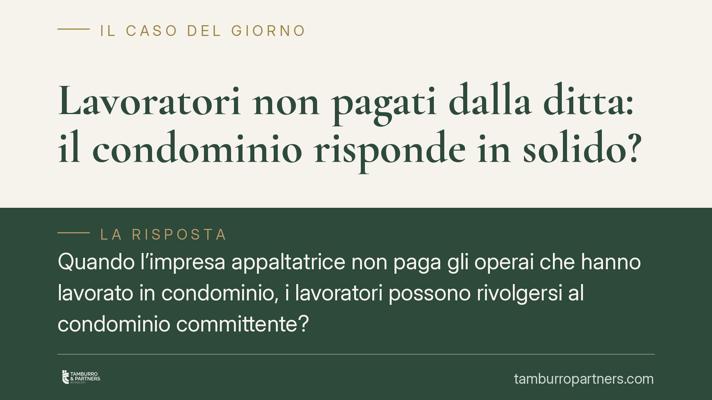
Lavoratori non pagati dalla ditta: il condominio risponde in solido?
Quando l'impresa appaltatrice non paga gli operai che hanno lavorato in condominio, i lavoratori possono rivolgersi al condominio committente? La Corte di Cassazione tende a esclud…
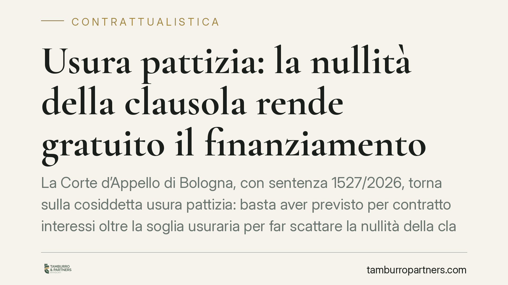
Usura pattizia: la nullità della clausola rende gratuito il finanziamento
La Corte d'Appello di Bologna, con sentenza 1527/2026, torna sulla cosiddetta usura pattizia: basta aver previsto per contratto interessi oltre la soglia usuraria per far scattare …
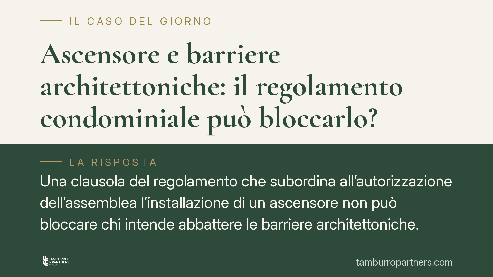
Ascensore e barriere architettoniche: il regolamento condominiale può bloccarlo?
Una clausola del regolamento che subordina all'autorizzazione dell'assemblea l'installazione di un ascensore non può bloccare chi intende abbattere le barriere architettoniche. La …
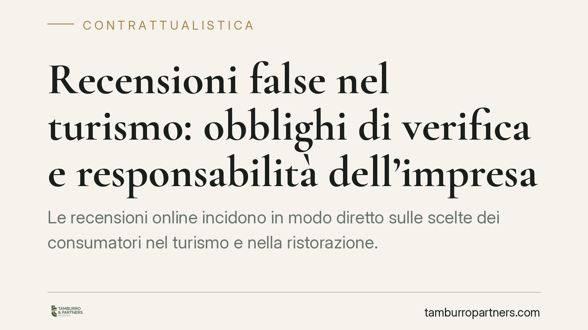
Recensioni false nel turismo: obblighi di verifica e responsabilità dell'impresa
Le recensioni online incidono in modo diretto sulle scelte dei consumatori nel turismo e nella ristorazione. Il quadro normativo vigente, già rafforzato dal recepimento della Diret…
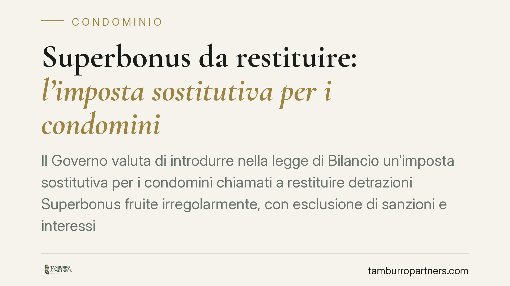
Superbonus da restituire: l'imposta sostitutiva per i condomini
Il Governo valuta di introdurre nella legge di Bilancio un'imposta sostitutiva per i condomini chiamati a restituire detrazioni Superbonus fruite irregolarmente, con esclusione di …
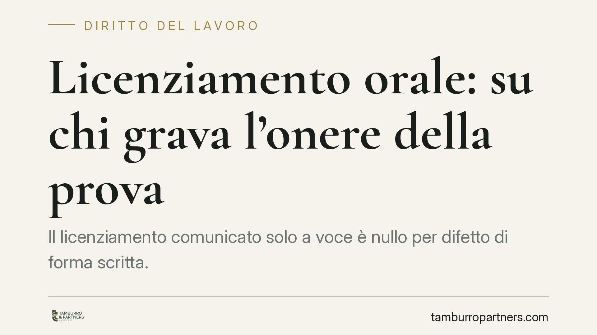
Licenziamento orale: su chi grava l'onere della prova
Il licenziamento comunicato solo a voce è nullo per difetto di forma scritta. Ma la giurisprudenza ricorda un punto decisivo: spetta al lavoratore dimostrare che il rapporto è cess…
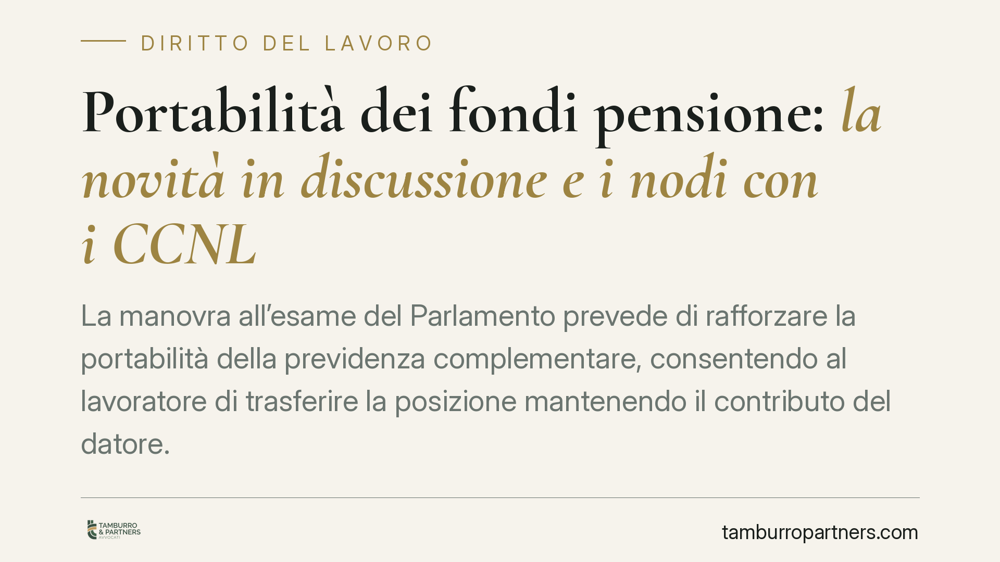
Portabilità dei fondi pensione: la novità in discussione e i nodi con i CCNL
La manovra all'esame del Parlamento prevede di rafforzare la portabilità della previdenza complementare, consentendo al lavoratore di trasferire la posizione mantenendo il contribu…
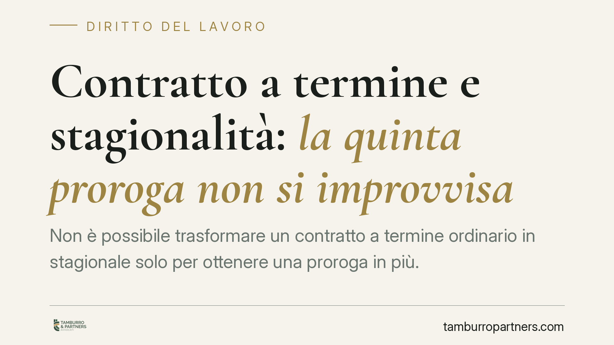
Contratto a termine e stagionalità: la quinta proroga non si improvvisa
Non è possibile trasformare un contratto a termine ordinario in stagionale solo per ottenere una proroga in più. La stagionalità è una qualità oggettiva dell'attività, non un'etich…
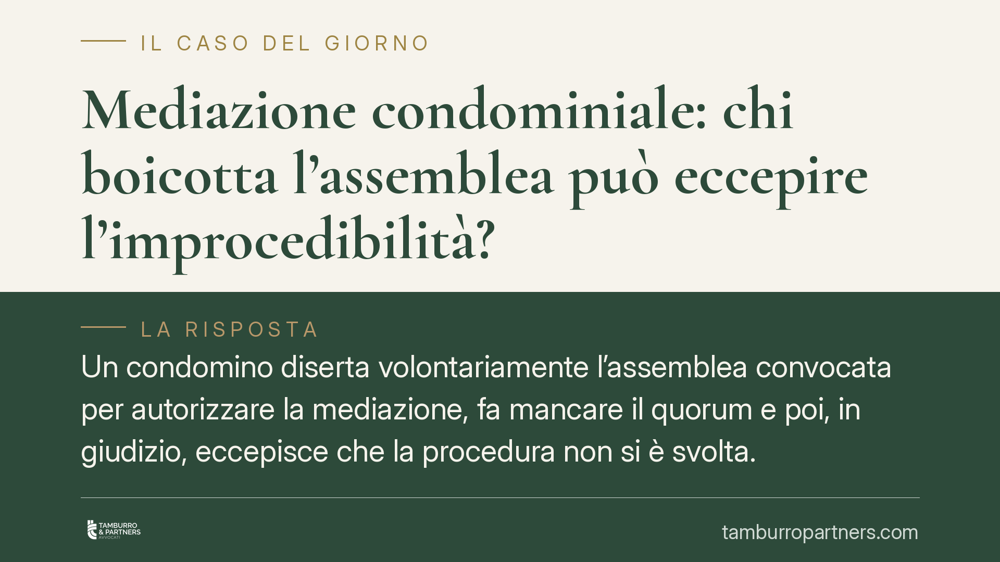
Mediazione condominiale: chi boicotta l'assemblea può eccepire l'improcedibilità?
Un condomino diserta volontariamente l'assemblea convocata per autorizzare la mediazione, fa mancare il quorum e poi, in giudizio, eccepisce che la procedura non si è svolta. Una p…
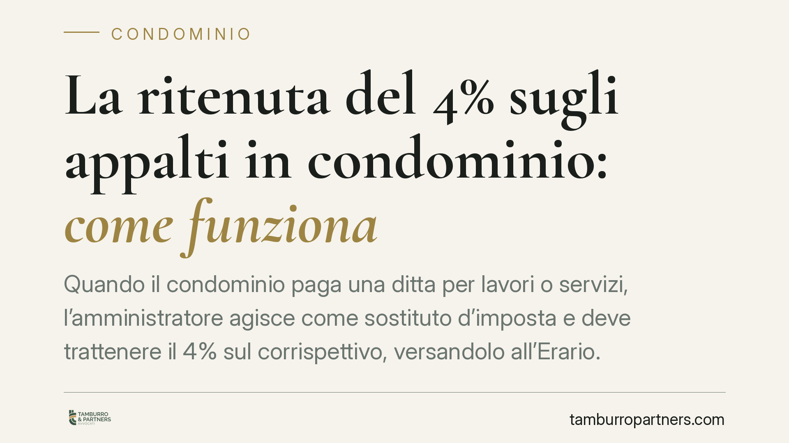
La ritenuta del 4% sugli appalti in condominio: come funziona
Quando il condominio paga una ditta per lavori o servizi, l'amministratore agisce come sostituto d'imposta e deve trattenere il 4% sul corrispettivo, versandolo all'Erario. È una r…
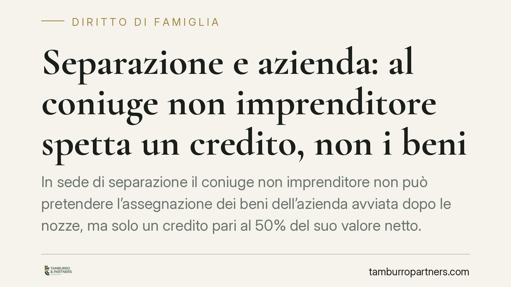
Separazione e azienda: al coniuge non imprenditore spetta un credito, non i beni
In sede di separazione il coniuge non imprenditore non può pretendere l'assegnazione dei beni dell'azienda avviata dopo le nozze, ma solo un credito pari al 50% del suo valore nett…
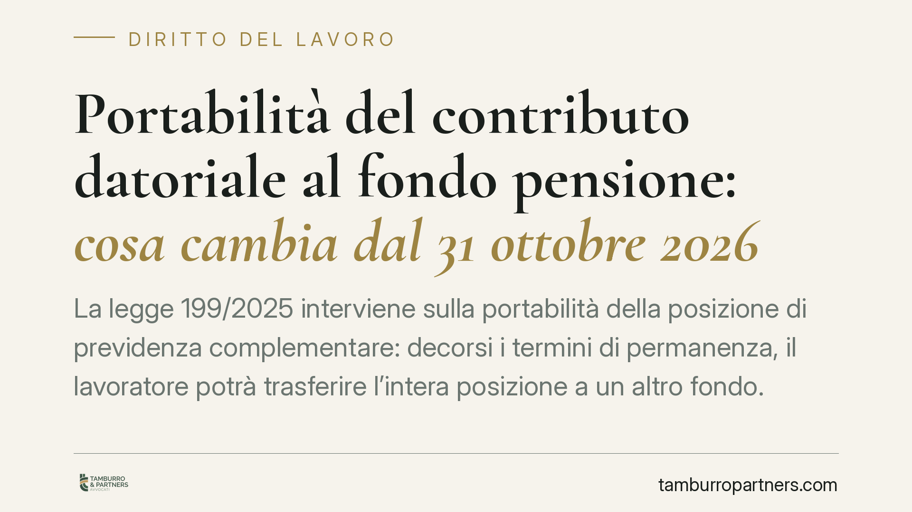
Portabilità del contributo datoriale al fondo pensione: cosa cambia dal 31 ottobre 2026
La legge 199/2025 interviene sulla portabilità della posizione di previdenza complementare: decorsi i termini di permanenza, il lavoratore potrà trasferire l'intera posizione a un …
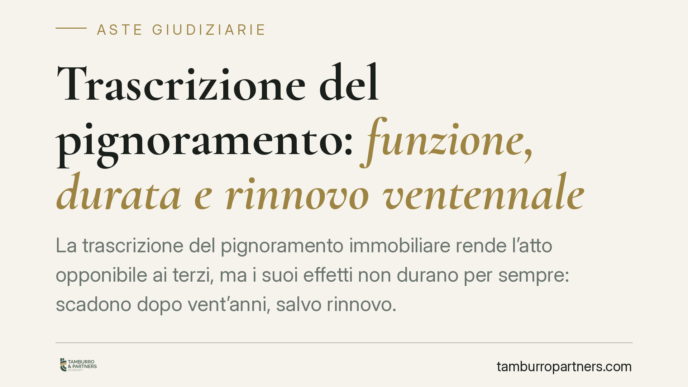
Trascrizione del pignoramento: funzione, durata e rinnovo ventennale
La trascrizione del pignoramento immobiliare rende l'atto opponibile ai terzi, ma i suoi effetti non durano per sempre: scadono dopo vent'anni, salvo rinnovo. Comprendere il meccan…
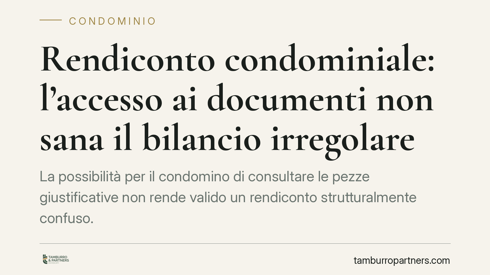
Rendiconto condominiale: l'accesso ai documenti non sana il bilancio irregolare
La possibilità per il condomino di consultare le pezze giustificative non rende valido un rendiconto strutturalmente confuso. Secondo l'orientamento del Tribunale di Roma, la chiar…
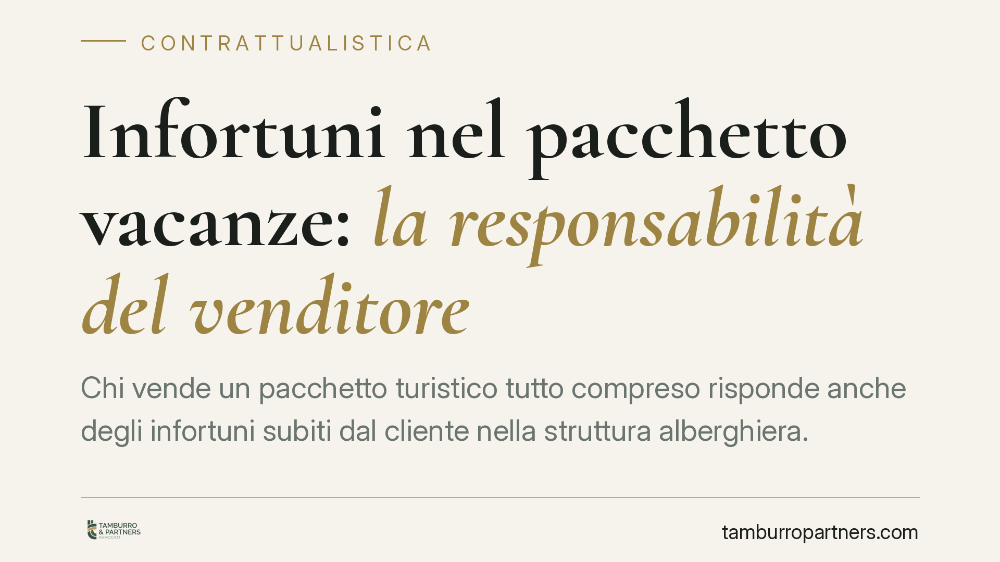
Infortuni nel pacchetto vacanze: la responsabilità del venditore
Chi vende un pacchetto turistico "tutto compreso" risponde anche degli infortuni subiti dal cliente nella struttura alberghiera. La Corte di Cassazione ribadisce che l'organizzator…
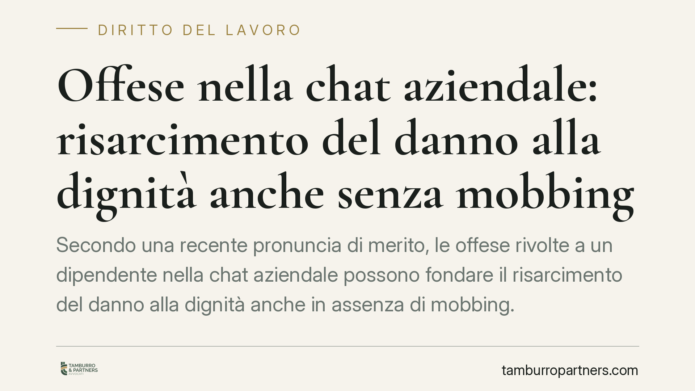
Offese nella chat aziendale: risarcimento del danno alla dignità anche senza mobbing
Secondo una recente pronuncia di merito, le offese rivolte a un dipendente nella chat aziendale possono fondare il risarcimento del danno alla dignità anche in assenza di mobbing. …

Cadute su scale bagnate: il condominio paga anche se la pulizia è in appalto
Il condominio è custode delle parti comuni ex art. 2051 c.c.: appaltare le pulizie non sposta la responsabilità verso il danneggiato. Solo rivalsa sull'appaltatore.

RUNTS: chiarimenti Modello D 2024 per enti del terzo settore
Il Ministero del Lavoro chiarisce l'uso del Modello D semplificato per gli ETS con entrate inferiori a 220.000 euro.

Licenziamento disciplinare: contestazione specifica e tempestiva
La Cassazione ribadisce: contestazione non specifica = nullità del licenziamento. Implicazioni operative per HR.

Clausole vessatorie B2B: la nuova lettura del Tribunale di Milano
Anche tra imprese, una clausola di limitazione di responsabilità non specificamente approvata può essere abusiva.

Bonus condominiali: ripartizione spese e delibera assembleare
Con il restringimento delle agevolazioni, le assemblee tornano a deliberare nuovi criteri di ripartizione.

5x1000: nuove regole per le ricevute di rendicontazione
L'Agenzia delle Entrate aggiorna lo schema di rendicontazione. Cosa devono fare gli enti beneficiari entro l'anno.

Ispezione INL: come gestire la richiesta documentale
I tempi di risposta, i documenti obbligatori, i margini di interlocuzione. Checklist operativa per HR.